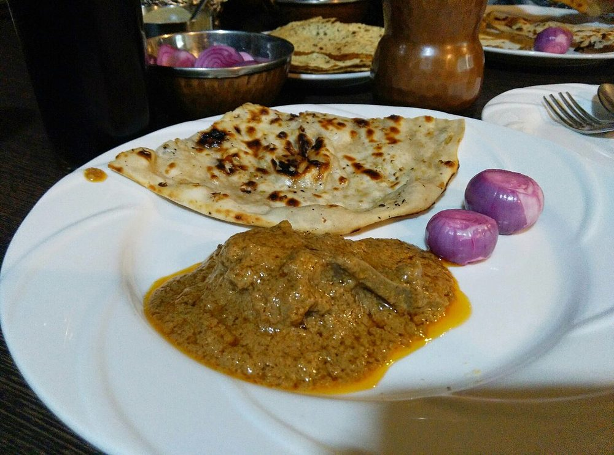

Mutton Chukka Varuval
slow-cooked mutton fried down dry until every piece is coated in black masala

Allergens: none of the common ones
Ingredients
Quantities for 4.
- 700g, bone-in, cut into 3cm pieces Muttonshoulder or leg
- 4 tbsp Sesame Oilgingelly oil
- 20 small, sliced Shallotor 2 onions, finely sliced
- 10 cloves, crushed Garlic
- 1.5 inch, crushed Ginger
- 3 sprigs Curry Leavesone for the pot, two for the finish
- 1 tsp Turmeric
- 2 tsp, coarsely crushed Black Pepperhalf in the masala, half at the end
- 8 Dried Red Chilli
- 2 tbsp Coriander Powder
- 2 tsp Fennel Seeds
- 1 tsp Cumin Seeds
- 1 tsp Stone Flowerkalpasi
- 1 Star Anise
- 1 inch Cinnamon
- 4 Cloves
- 3 tbsp, grated Dried Coconutoptional
- 3 tbsp, chopped Coriander Leavesoptional
- 250ml Waterfor the pressure cooker
- to taste Salt
Equipment
stovetop, pressure cooker, kadhai, blender
Before you start
- Chukka means dry. The mutton is cooked soft first, then fried until the gravy has vanished into a coating — plan for two stages and do not shortcut the second.
- Bring the mutton to room temperature for 30 minutes before cooking; cold meat straight from the fridge seizes and takes longer to tenderise.
- Goat, not lamb, if you can get it — the flavour holds up to this much pepper.
Method
- Dry-roast the chillies, coriander, fennel, cumin, stone flower, star anise, cinnamon, cloves and 1 tsp of the pepper over low heat for 5 minutes, until fragrant and a shade darker. Cool and grind fine with the coconut.Roast on the lowest flame you can hold. Scorched kalpasi turns the whole dish bitter.
- Pressure cook the mutton with turmeric, half the crushed garlic and ginger, one sprig of curry leaves, salt and 250ml water for 5 whistles, then 15 minutes on low.
- Release the pressure naturally and check: the meat should give when pressed with a spoon. If not, cook 2 more whistles.Do not proceed with tough mutton. No amount of frying later will soften it.
- Drain the mutton, keeping the stock. Heat the gingelly oil in a kadhai and fry the remaining curry leaves 10 seconds.
- Add the shallots and fry over medium heat until deep brown at the edges, about 10 minutes.
- Add the rest of the garlic and ginger, fry 2 minutes, then add the ground masala and fry 4 minutes with a splash of the stock.
- Tip in the drained mutton and toss so every piece is coated. Add 100ml of the reserved stock.
- Now fry it down over medium-low heat, stirring every couple of minutes, for 20-25 minutes, until the liquid is gone and the masala clings darkly to the meat.This is the whole dish. Stop while it is still glossy and slightly sticky, not powder-dry.
- Crush in the remaining 1 tsp pepper off the heat, scatter the coriander leaves and rest 5 minutes.Pepper added at the end stays sharp and floral; pepper cooked from the start goes flat.
Storage
Keeps 3 days refrigerated and tastes better on day two. Reheat dry in a hot pan for 3-4 minutes; a microwave steams it and loses the crust.
Nutrition Low estimate
| Per serving246 g | Per 100 g | |
|---|---|---|
| Calories | 448 kcal | 182 kcal |
| Protein | 39.2 g | 16.0 g |
| Carbohydrate | 12.4 g | 5.0 g |
| of which sugars | 1.2 g | 0.5 g |
| Fibre | 6.0 g | 2.5 g |
| Fat | 27.8 g | 11.3 g |
| of which saturated | 9.9 g | 4.0 g |
| of which unsaturated | 15.7 g | 6.4 g |
A rough guide only. A large part of this ingredient list is given to taste rather than by weight, or much of what is weighed is not eaten. Some ingredients have no exact match in the nutrient database and use the nearest equivalent: curry leaves, mutton, stone flower. Estimated from raw ingredients using USDA FoodData Central. Cooking changes are not modelled, and added salt is excluded, so sodium is not given.
Recipe v1.0.0, last updated 2026-07-31. Curated for Khaana and kept under version control.